Unit 1: Visibility#
Topics: Brightness and Contrast, colors, accessibility
Learning objective#
Learners should be able to load an example image, adjust colors, brightness, and contrast, and create a merged image, in order to make the information in the image clearly visible to a wide audience and to accurately represent the underlying image content.
Time needed: 45 min
Motivation#
Microscopy images are data that document a scientific result. To communicate the scientific result in an image figure effectively and truthfully, images typically need to be processed. This processing can go wrong, and the image figure can then fail to clearly and correctly communicate the underlying data (Fig. 11):
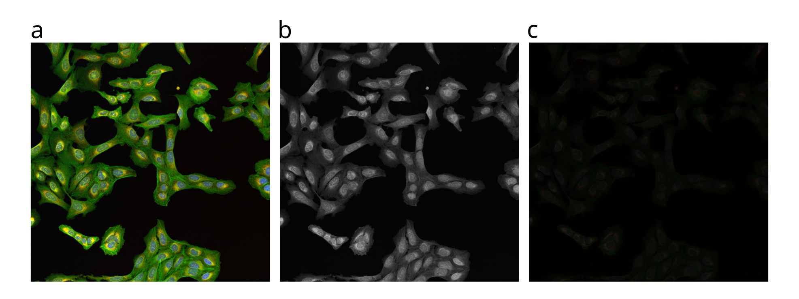
Fig. 11 The same multi-channel image visualized in different forms, all failing to communicate its content. (a) Blue, green, red, and yellow look-up tables overlap and blend, obscuring individual channels. (b) All channels rendered in grayscale, making them indistinguishable. (c) Brightness and contrast processed incorrectly, leaving the image too dark.#
Key considerations#
Is the information visible?
What do the colors mean?
Is the information accessible to a wide audience?
Considerations beyond this course#
It’s also important that the image used for visualization is of sufficient quality. For further information on how to assess intensity quality in images using image histograms, please see: Image quality: Image histogram.
We have also collected material concerning correct image acquisition here: Further material: Image acquisition.
Before creating an image figure#
The image figure should visualize a specific scientific result. For our course example we have U-2 OS cells treated with a negative control, DMSO, and the treatment Nocodazole. The treatment results in the appearance of small rounded cells (see below).
We have also quantified this using an area threshold of 1000 µm² and found 0% small rounded cells in the negative control and 79% small rounded cells in the treated cells. We want to create an image figure to visualize this.
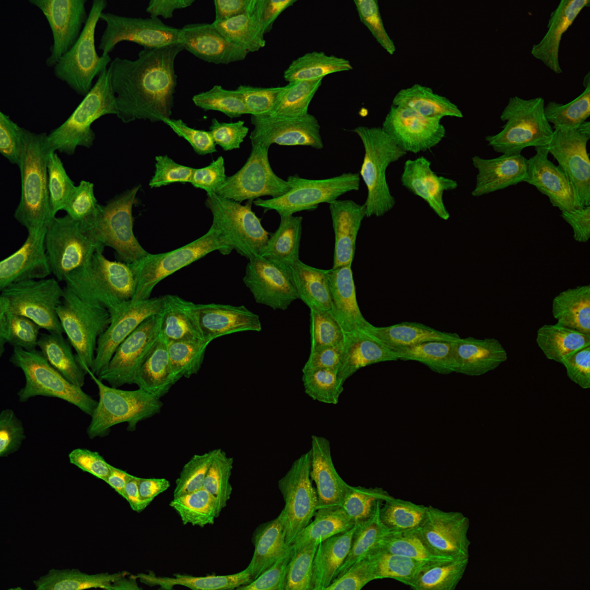
Fig. 12 Negative control DMSO treated U-2 OS cells.#
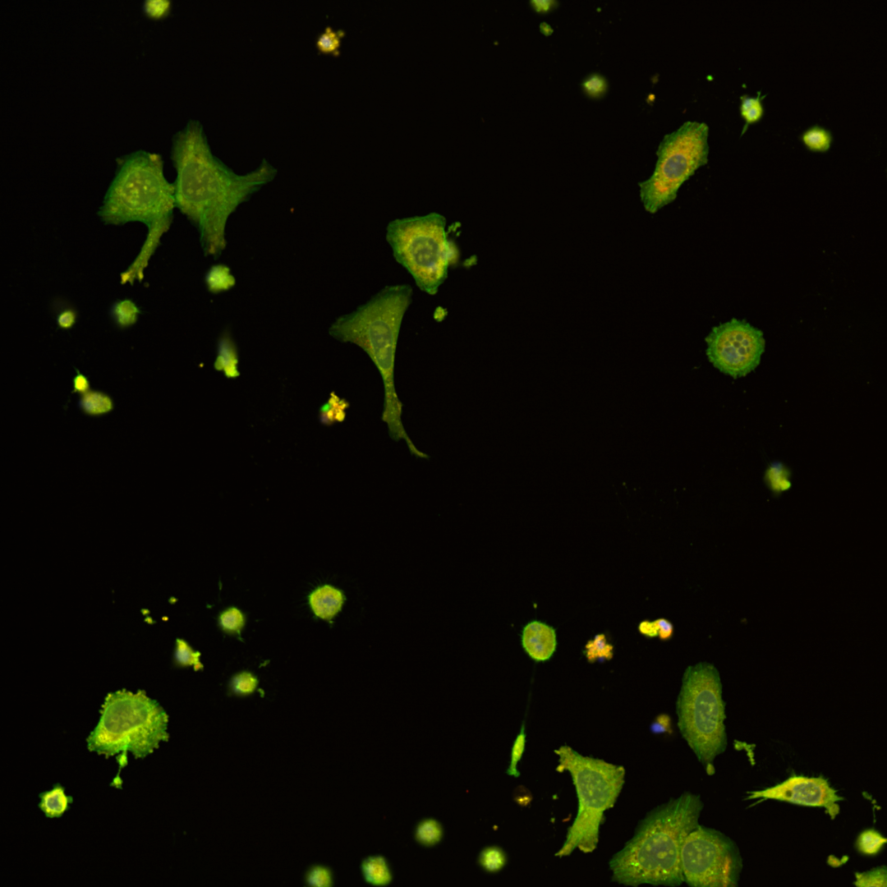
Fig. 13 Nocodazole treated U-2 OS cells.#
Think about it
What are the critical aspects that we need to show to visualize these results?
For this example we want to show the overview images to give the viewer an idea about the difference in the treatments in terms of overall number of cells affected. We also will show crops of cells to better visualize the overall difference in cell shape and size.
The acquired images have four channels for the major cellular compartments (Nucleus, Mitochondria, Cytoskeleton and Endoplasmic reticulum). The image figure focuses on the overall cell shape and size and not the different cellular compartments. Thus, we will only visualize three channels. See final result below:

Fig. 14 Final result of course example.#
Selecting images for visualization#
Another aspect that we should also consider at this stage is the choice of images. Typically, an image dataset is acquired instead of just a single image, and the chosen image shapes how the reader perceives the result.
For instance picking an unusually striking or atypical example (an “edge of distribution” image) misrepresents the data and overstates the science. Acceptable methods to choose an image for a figure could be:
Representative image
Random selection
Based on analysis (middle of distribution)
Show multiple examples of the range of phenotypes
Load example images#
This tutorial starts with a multi-channel image (Fig. 16). Download a TIFF of the example image here: multichannel_image.tif.
Open Fiji.
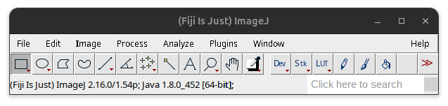
Fig. 15 Fiji task bar#
Then open the multi-channel image in Fiji:
File > Open… (or drag and drop image into Fiji task bar)
Fig. 16 Multichannel image#
Tip
Work on a copy of the image: Image > Duplicate… (Ctrl + Shift + D; Mac: ⌘ + Shift + D)
Split channels#
In order to process individual channels, we need to first split the multi-channel image into single channels.
Image > Color > Split Channels
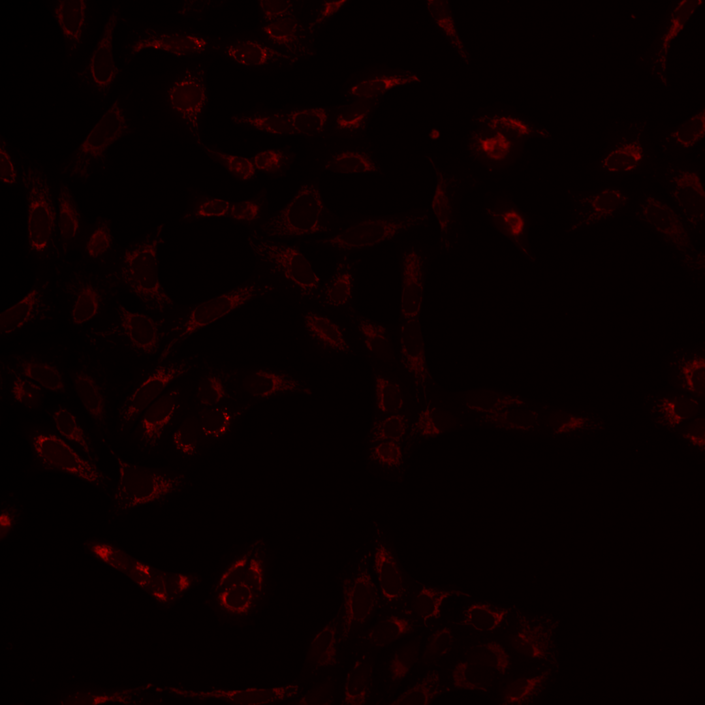
Fig. 17 Channel 1#
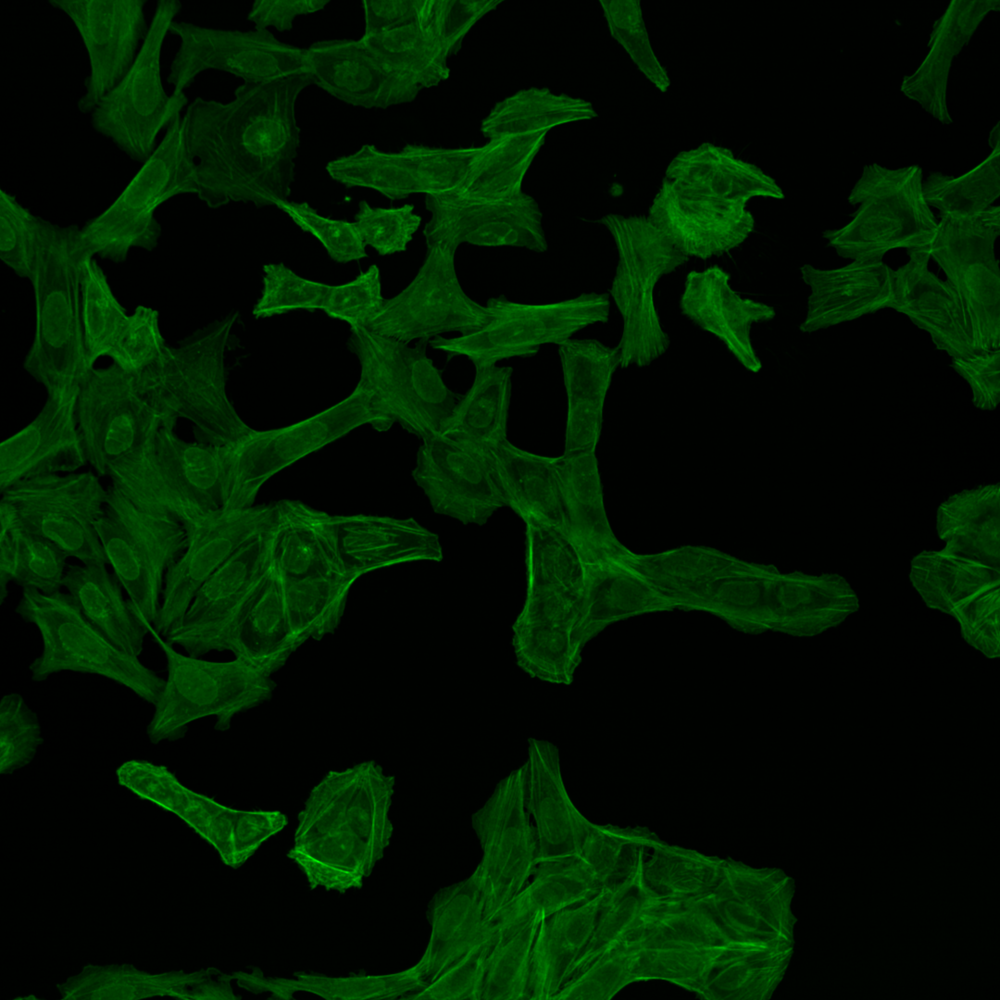
Fig. 18 Channel 2#
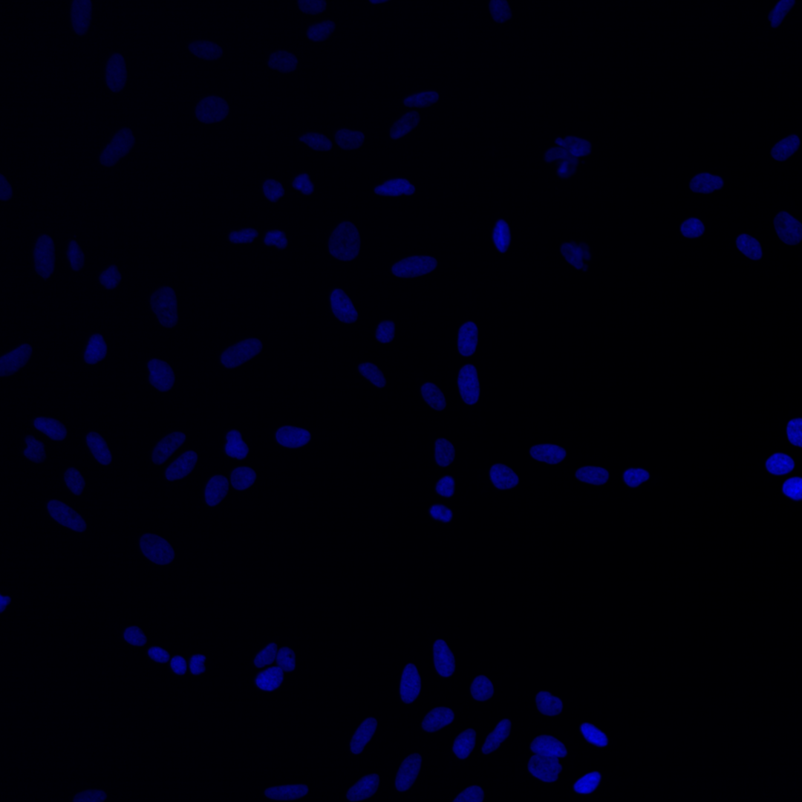
Fig. 19 Channel 3#
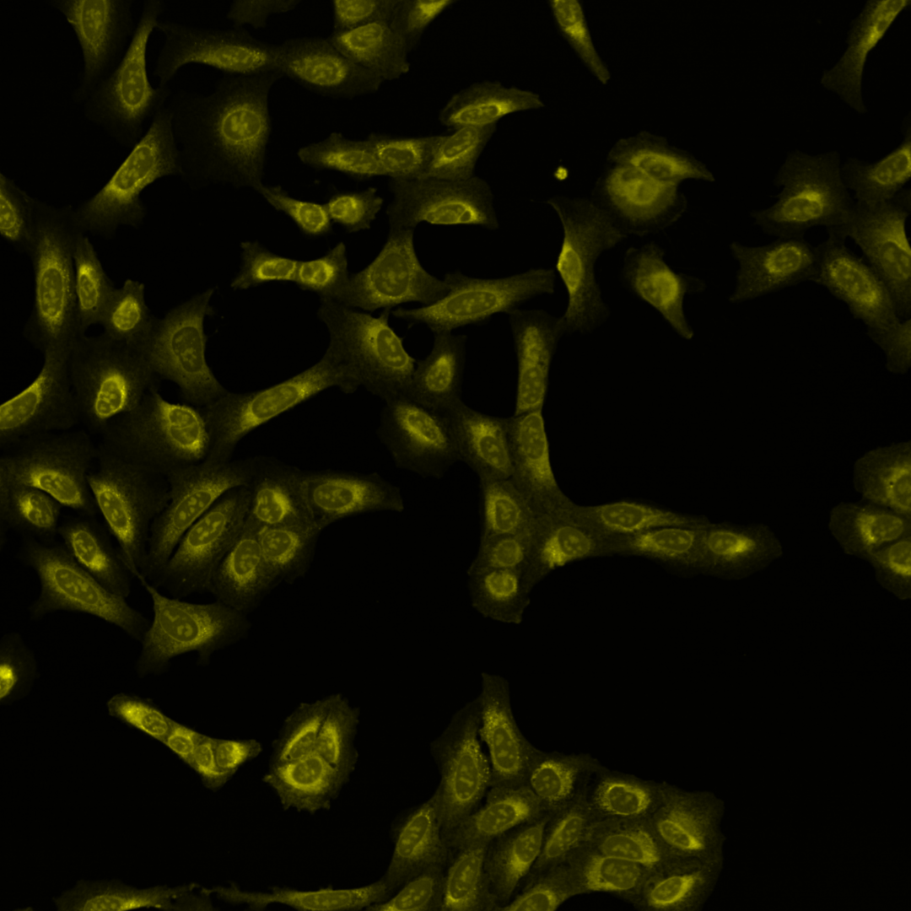
Fig. 20 Channel 4#
Each of the channels encodes different cellular compartments.
Channel |
Image Name |
Cellular Compartment |
|---|---|---|
1 |
C1-multichannel_image.tif |
Mitochondria |
2 |
C2-multichannel_image.tif |
F-actin cytoskeleton, Golgi, plasma membrane |
3 |
C3-multichannel_image.tif |
Nucleus |
4 |
C4-multichannel_image.tif |
Endoplasmic reticulum, Nucleoli, cytoplasmic RNA |
As you can see, the individual channels are displayed using different colors. Typically, microscopy images are grayscale images, and the colors are chosen to make the image information easier to understand for humans. The color could, for instance, communicate different cellular compartments, e.g., nuclei = cyan, cytoskeleton = green.
Note
The multi-channel image has been acquired using a Spinning Disk Confocal Microscope using a sCMOS camera that acquires grayscale images. Most microscope systems acquire images in grayscale. This is different from natural images (i.e., photography), where different camera sensors are used that produce Red, Green, and Blue (RGB) images.
Further, each channel also has different brightness and contrast settings, thus being more or less visible. Colors, as well as the brightness and contrast settings, need to be adjusted to visualize the image effectively.
Tip
Fiji allows you to record most processing steps that are carried out, including the settings, using the macro recorder. This can be used to create a script to automatically process multiple images, but can also be used to document the processing.
Record the functions and settings used: Plugins > Macros > Record…
To learn more go to the bonus section Bonus: Macro recorder.
Colors#
The colors are part of a Look up tables (LUT) that assign specific color values to the pixel values.
Important
For color choice, consider that a part of the population is color blind (e.g., red-green blindness) — pairing red and green channels makes the figure unreadable for them and erases the very contrast you intended to show. You can simulate how your multichannel images appear with different color blindness using Image > Color > Simulate Color Blindness.
Also consider the different visibility of different colors on different backgrounds. For instance, dark blue is hard to perceive on a black background; a cyan LUT would be better. Thus, combinations of LUTs should be used that visualize images well and for a broad audience. In our experience, the combination of magenta, green, and cyan works well.
For the image figure of the example image, we want to visualize channel 1 (mitochondria), channel 2 (cytoskeleton), and channel 3 (nucleus). Here we choose the following color scheme that takes color blindness into account:
Channel |
Cellular Compartment |
LUT |
|---|---|---|
1 |
Mitochondria |
Magenta |
2 |
F-actin cytoskeleton, Golgi, plasma membrane |
Green |
3 |
Nucleus |
Cyan |
Note
For the visualization of a merged color image, we generally recommend using only up to three channels, since three channels can still be easily differentiated using standard LUT choices.
For visualizing more than three channels, we recommend presenting the individual channels in grayscale side by side.
Thus, channel 4 will not be further processed in the merged visualization.
To change the LUT, select the image showing a specific channel and then select the LUT using:
Image > Lookup Tables > [Select LUT]
For example, for image: C1-multichannel_image.tif
Image > Lookup Tables > Magenta
Channel 2 is already presented in the green color LUT, as defined in the microscope settings and image metadata. For channel 3, we can use the color LUT:
Select image: C3-multichannel_image.tif
Image > Lookup Tables > Cyan


Tip
For these grayscale microscopy images, it is important to choose appropriate color LUTs (e.g., linear color range) that communicate the image information effectively (e.g., good visibility).
Color choice can also be based on conventions in the field (e.g., Nucleus = Cyan, Membrane = Magenta, Cytoplasm = Green). Alternatively, colors can also correspond to the used fluorophore (e.g., DAPI = Cyan, Green fluorescent protein (GFP) = green, red fluorescent protein (RFP) = magenta).
The color LUT can also be inverted to visualize the information better:
Image > Color > Invert LUTs
Provide grayscale images#
Since the perception of the information in an image is influenced by the color choice (see demonstration below), we recommend including grayscale images at least in the supplements.

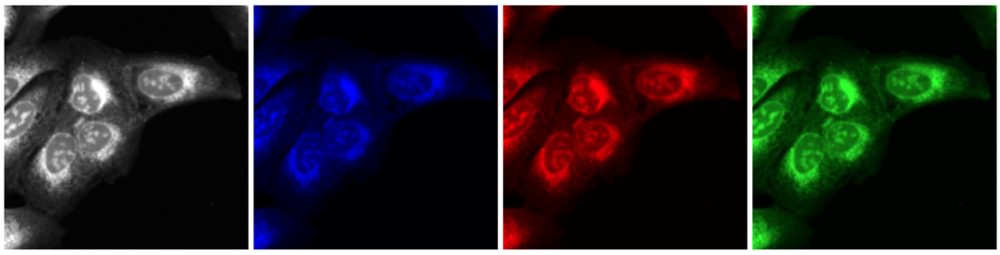
Fig. 24 Effect of different LUTs on the visualization of the image data. Same image crop with the same brightness/contrast settings. The blue channel gives the worst visualization as almost none of the detail is visible. This is closely followed by red. Green is better, though some details are still harder to see than in the grayscale version.#
Select image: C1-multichannel_image.tif Image > Lookup Tables > Grays
Select image: C3-multichannel_image.tif Image > Lookup Tables > Grays
Select image: C3-multichannel_image.tif Image > Lookup Tables > Grays
Select image: C4-multichannel_image.tif Image > Lookup Tables > Grays

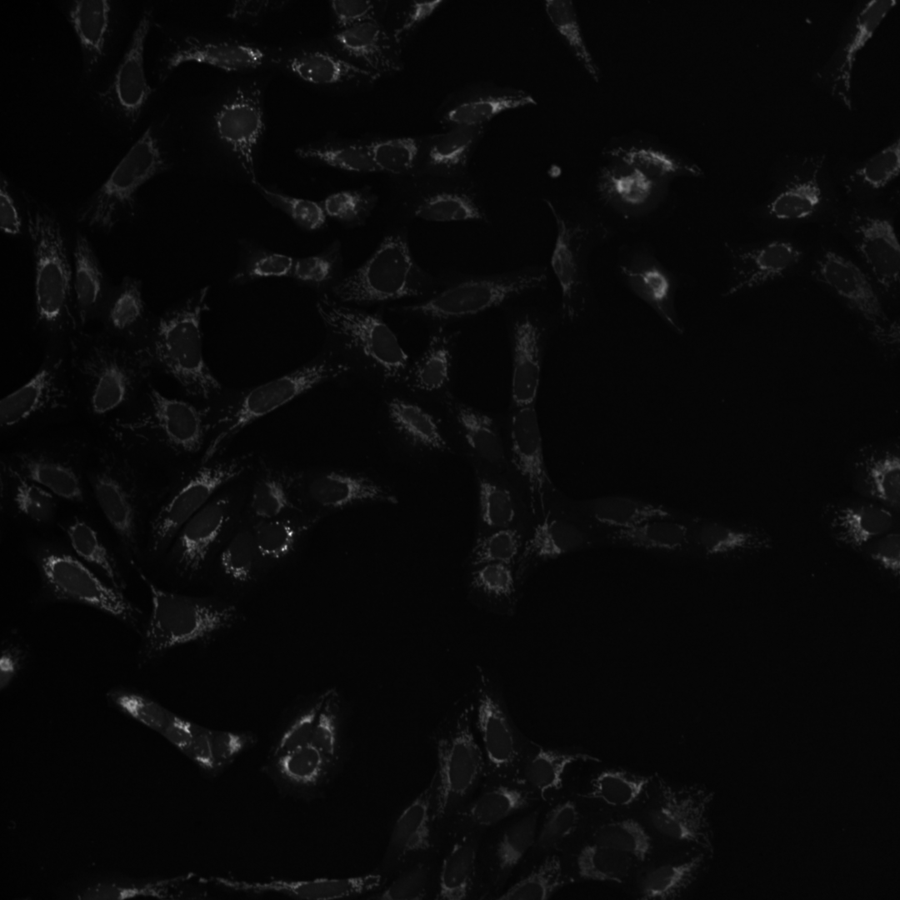
Fig. 25 Channel 1#

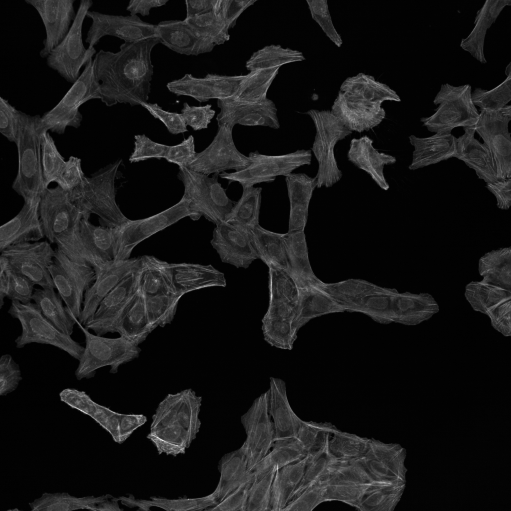
Fig. 26 Channel 2#

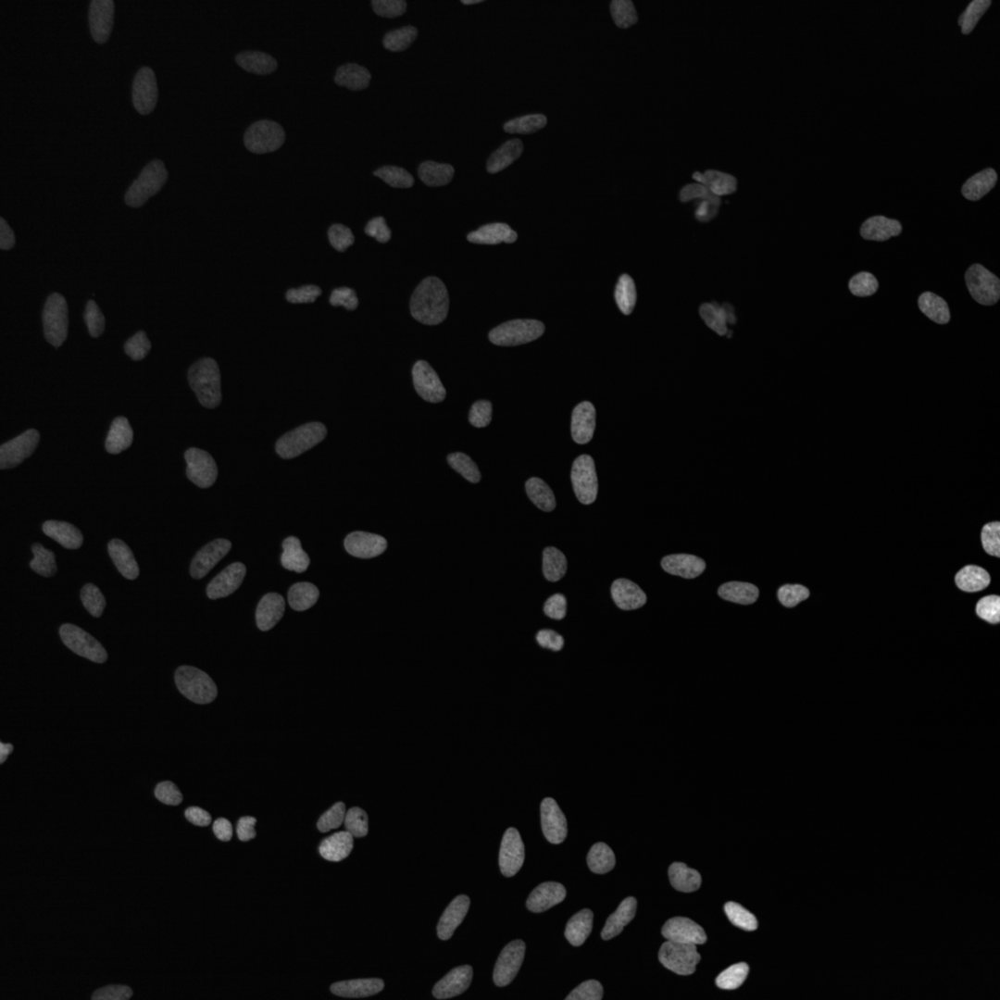
Fig. 27 Channel 3#

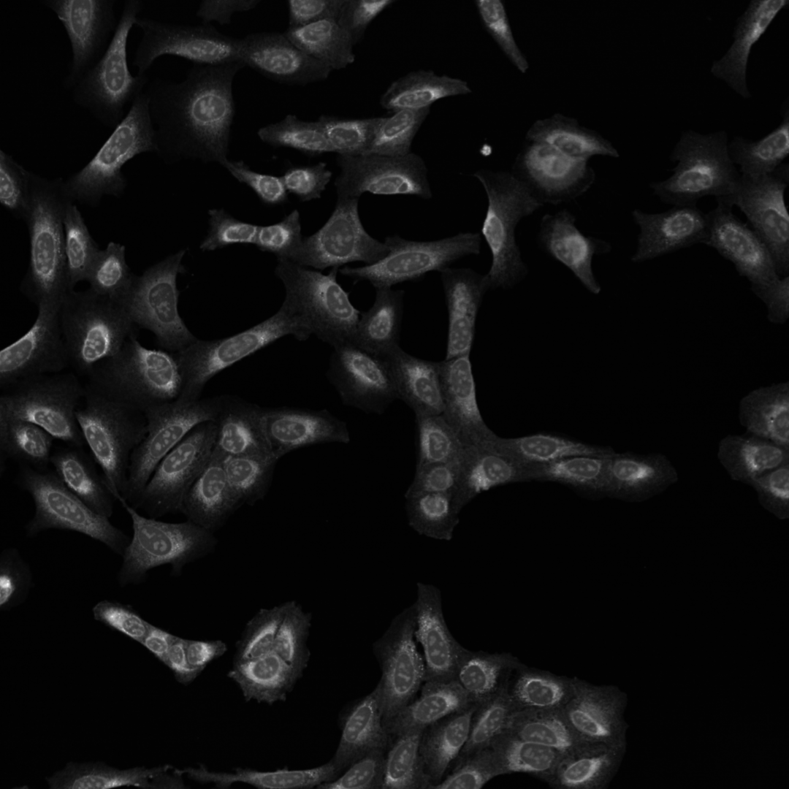
Fig. 28 Channel 4#
Save these images for further sharing: File > Save As > Tiff…
Brightness and Contrast#
Images vary in visibility depending on their brightness and contrast settings. This is because the intensity range (i.e., pixel or gray values) of images typically acquired using microscopes (e.g., 16-bit images have 65,536 unique values) is much larger than the intensity range that can be displayed on computer screens or even the intensity range that the human eye can perceive (i.e., closer to 8-bit or 256 unique values). Thus, the available intensity range must be adjusted. In Fiji, this is achieved using the Brightness/Contrast setting.
As you can see in our example single-channel images, in some panels, the information is not well visible.
Select one of the channels: C1-multichannel_image.tif
Image > Adjust > Brightness/Contrast… (Ctrl + Shift + C; Mac: ⌘ + Shift + C)

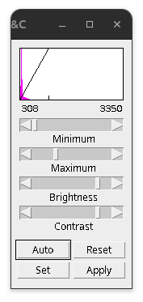
Fig. 32 Brightness/Contrast setting#
Brightness/Contrast interface:
Minimum slider: Selected value (shown left) will be set to black in the display.
Maximum slider: Selected value (shown right) will be set to white in the display.
Brightness slider: Moves the display range and adjusts image brightness.
Contrast: Increases or decreases the displayed range to adjust contrast.
Auto: Saturates the image by 0.35% steps.
Reset: Sets the display to the min and max values in the image or 0-255 for 8-bit.
Set: Input fixed values, useful for making comparisons.
Apply: Histogram stretching using the set min & max. Caution: not reversible!
In our experience, the only setting that needs to be regularly adjusted is the maximum intensity slider to make the information in the image more visible. Often cycling through a number of “Auto” settings and observing the effect on the visualization can generate good display settings. Typically, the default minimum setting is set to the lowest intensity value present in the image and is good enough.
In the figure processing we demonstrate how the full image information (i.e., full resolution with full 16-bit) is preserved until the final step. Thus, hitting the “Apply” button is not needed at any point in this course.
Pitfalls of brightness/contrast#
The Brightness/Contrast setting is a powerful setting that can drastically alter the visualized information of the image. For demonstration purposes, here are a couple of examples of how the same content can be visualized.
Important
Do not cut off information in the lower intensities, e.g., removing structures close to the background to make the images prettier.
Avoid oversaturation of large parts of the image. You can see the effect of this very easily when different objects start to merge.

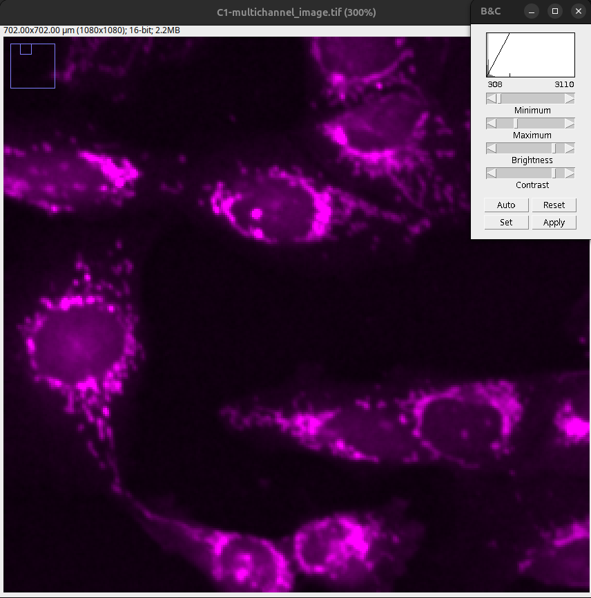
Fig. 33 After the first auto setting, 0.35% of the image is saturated. The objects (mitochondria) are visible and separated. Low-intensity information is present.#

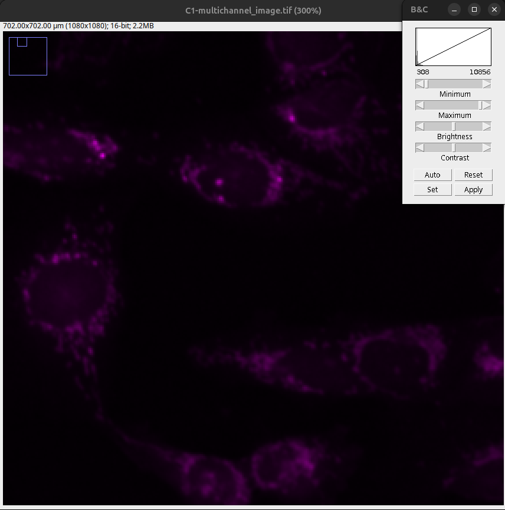
Fig. 34 After pressing reset, the Min & Max sliders are set to the minimum and maximum intensity values. As a result, the objects are not clearly visible.#

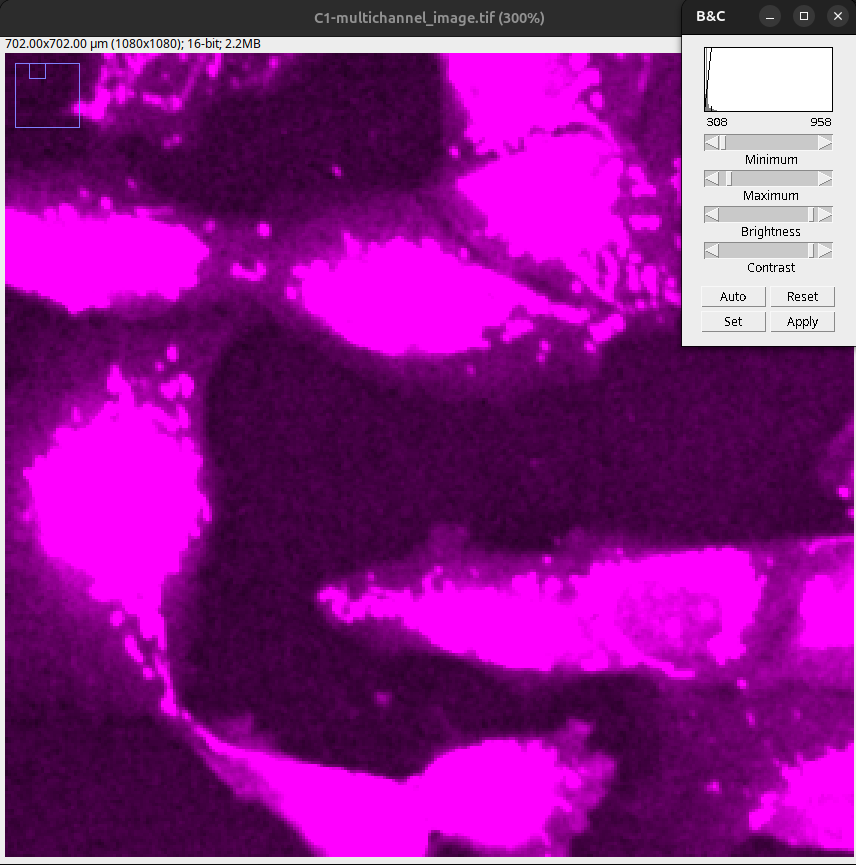
Fig. 35 Saturated image: Note that the objects are completely merged, and the low intensity structures appear in the same intensity as the objects.#

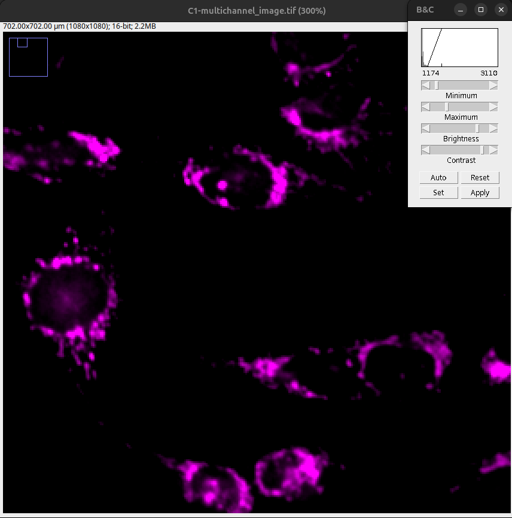
Fig. 36 Background cut too much: Note loss of lower intensity information.#
Adjust brightness/contrast#
Adjust the maximum slider or press “Auto” until the objects are well visible and still clearly separated. Oversaturation collapses neighboring high-intensity structures into a single bright blob, effectively losing spatial resolution and the ability to distinguish individual objects.

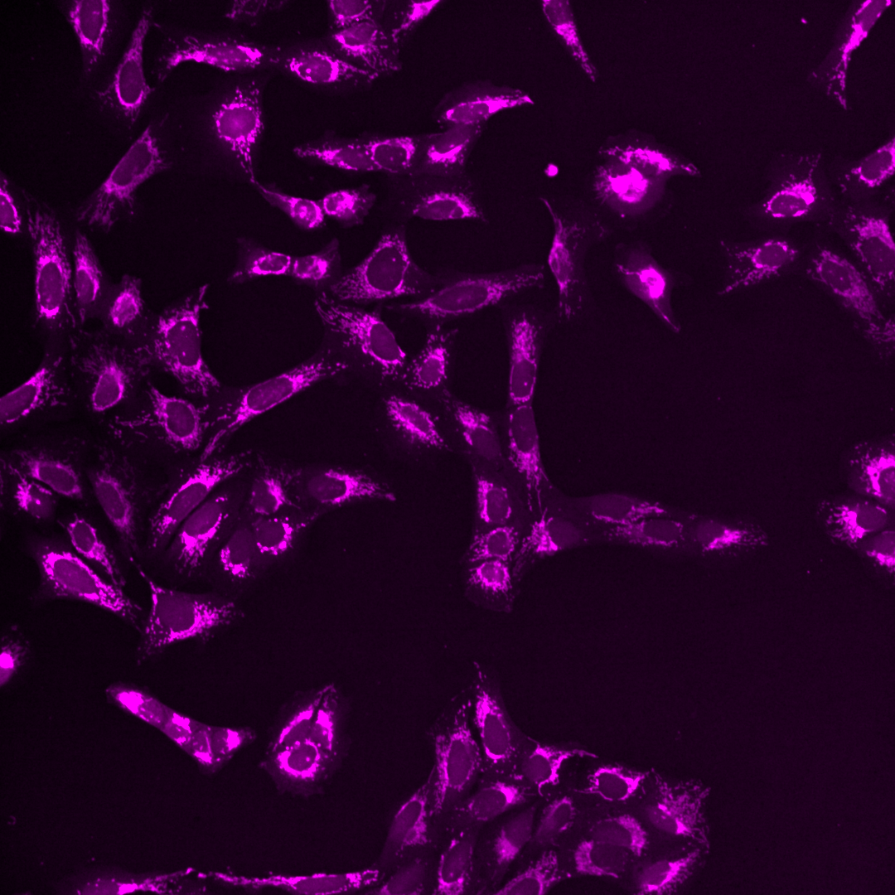
Fig. 37 Channel 1: Min = 308; Max = 2484#

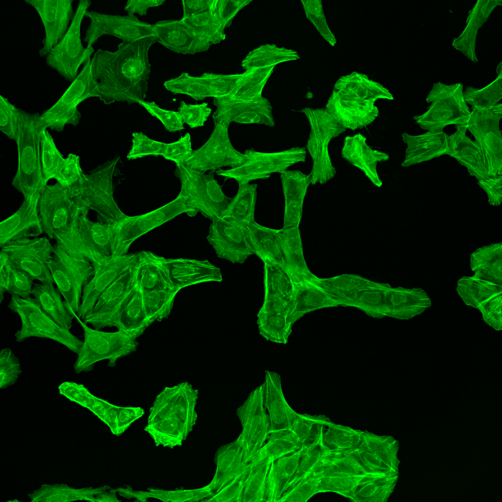
Fig. 38 Channel 2: Min = 84; Max = 2965#

Fig. 39 Channel 3: Min = 36; Max = 1270#
The information in the single-channel image is now clearly visible in the display without large loss of data (i.e., loss of low intensity information or oversaturation).
Important
For correct qualitative comparisons, it is vital to use the same min & max values on all the images that are compared.
For multi-channel images, the same settings across the channels might not be feasible, as the signal might have a different intensity distribution. It is important to use the same settings on the equivalent channels in the images that one wants to compare.
Since the Brightness/Contrast setting can alter the visualized information so drastically, we recommend:
Original images are provided for image figures (i.e., via image repository).
Minimum and maximum settings are recorded in the methods.
Provide color scales#
One can also provide a calibration bar next to the image. This is particularly useful if the intensity values are calibrated (i.e., photon count, not arbitrary units). In Fiji, a calibration bar can be produced like so:
Select an image, e.g., one of the channels: C1-multichannel_image.tif
Provide calibration bar: Analyze > Tools > Calibration Bar…

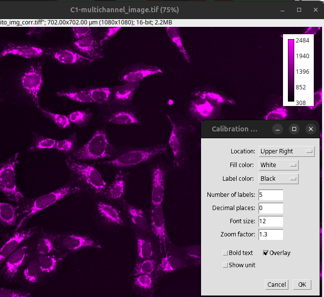
Fig. 40 Calibration bar#
In this course, we provide the minimum and maximum settings in the methods for each channel and the original image used for the image figure in a Zenodo repository. Since our example does not use calibrated intensity values, an additional calibration bar is not needed.
Important
Applied Brightness/Contrast adjustments or, in general, bit depth reduction (e.g., 16-bit converted down to 8-bit) represent a loss of information! Such images should, in general, not be used for quantitative image analysis. In particular, intensity quantification must not be performed on such images.
Create merged image#
After the color and brightness are adjusted, the three adjusted single-channel images can then be combined into a merged image.
Image > Color > Merge Channels…
Then assign the correct channels and LUTs, select ‘Create composite,’ and press OK.

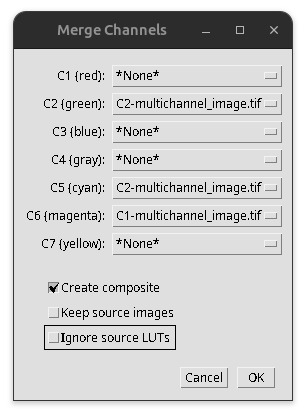
Fig. 41 Merge channels#
Tip
As you can see, you can also use the merge channels tool to assign the LUTs. Here, you would then select the correct channel/LUT combination, select “ignore source LUTs,” and then press OK.
The individual channels then get merged into a composite image (i.e., all channels are still separate images). Note the slider at the bottom of the image that still allows you to select different channels.

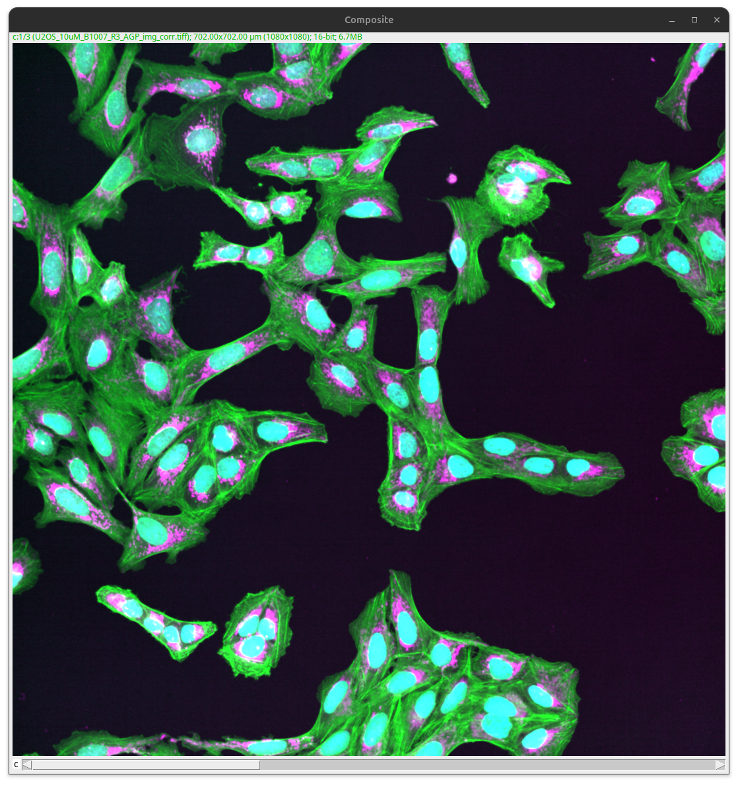
Fig. 42 Composite image#
Save result#
If you want to save the intermediate results, save them as TIFF, as this format preserves the image information and any additional layers:
File > Save As > Tiff…
Important
In general, when saving images, use formats that preserve the image information. Do not use file formats that use lossy compression (see example below):

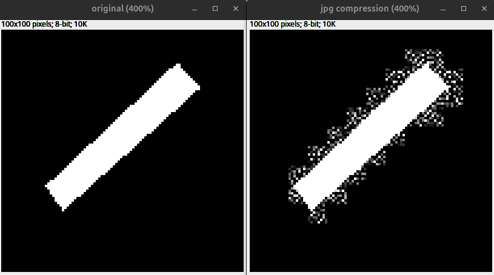
Fig. 43 Effect of lossy compression due to JPEG compression: (Left) Unprocessed example. (Right) Copy saved as .jpg.#
Result and next unit#
Download a TIFF of the result image here: composite.tif.
We will use the result in Unit 2: Format and annotations, where we will learn to format an image using cropping and rotation, and add key annotations such as scale bars.
Note
Merging more than three color channels into a single image for visualization is tricky, as the different combined colors might not be easily distinguished anymore by eye. Additive color mixing produces intermediate hues that the eye cannot reliably trace back to individual channels, so channel-specific information is effectively lost.
More than three channels can be tolerable when the objects in different channels are well separated. However, this is often not the case for biological information. Thus, we generally recommend visualizing more than three channels separately, ideally using grayscale images.
Self test#
Bonus: Macro recorder#
The macro recorder allows for documenting the processing steps that are carried out in the graphical user interface (GUI).
Important
Some GUI interactions are not recorded — for instance, dragging the minimum or maximum slider in Brightness/Contrast does not appear in the recorded macro. To capture those values, enter them via the “Set” button instead.
The recorder can be started:
Plugins > Macros > Record…
A text window appears that now documents most GUI adjustments.

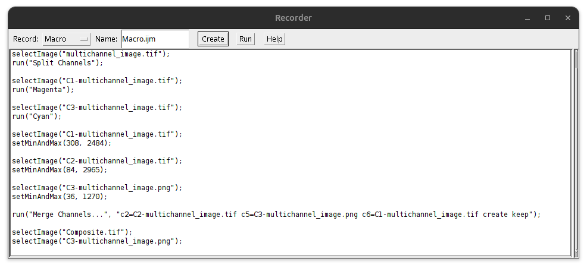
Fig. 44 Macro recorder#
Tip
Typically, one tries different settings on the image. You can go to the Recorder and modify the recorded commands to only include the final executed commands.
The final recorded macro documents the processing that has been performed. Press the button “Create” to create the macro and save it:
File > Save As…
Save as .ijm Fiji macro.

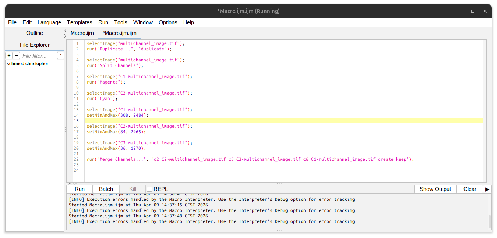
Fig. 45 Macro script#
The cool thing is that by pressing “Run,” one can reproduce the entire processing. Even cooler is to fully automate the processing of all your images by doing some simple macro programming. You can download the macro example to test it Macro.ijm (right-click and select “Save Link As…”).
Note
For the macro to work, the “multichannel_image.tif” image needs to be open under this exact name in Fiji.